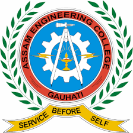

Prime Minister's Research Fellow || Doctoral Scholar
Department of Chemical Engineering Institute of Technology
(IIT)
Guwahati Guwahati, Assam-781039, INDIA.
Email: m.mangal@iitg.ac.in
Phone: +91 9896570308
Courses completed during PhD
Course Name
Credit
Grade
Characterization of Materials
6.00
AB
Membranes
6.00
AA
Composites Materials
6.00
AA
Research Methodology and Scientific Writing
6.00
AB
Energy Resources
6.00
AA
Cumulative Performance Index (C.P.I.) = 9.6
Courses taught under PMRF scheme

B.Tech - Third Year
Alternative Energy Resources
(Department of Chemical Engineering, Assam Engineering College, Assam)
My Research
Novel bio-based eco-friendly plastics: Synthesis, characterization, and
biodegradability of isocyanate and non-isocyanate-based polyurethanes
We aim to develop eco-friendly and biodegradable polyurethanes by utilizing renewable resources. This involves optimizing the chemical composition of polyols and di-isocyanates to achieve alternating hard and soft segments in the polymer structure. By focusing on renewable feedstocks, we strive to create highly effective polyurethanes with improved biodegradability, contributing to sustainable material development.
OBJECTIVES OF THE WORK
Synthesis of vegetable oil-derived polyurethane sheets reinforced with cellulose
nanofibers
Characterization and optimization of various parameters (i.e. time, compositions) of
mouldable sheets synthesized
Synthesis of isocyanate free polyurethane products using bio based raw materials
Polymerization Mechanism using Machine Learning and Force Field Potential